Guide de l'utilisateur du logiciel EasyTAG (version 1.99.11)
- chapitre 2 -
Table des matières.
La figure ci-après présente une vue d'ensemble de l'interface. Celle-ci est organisée autour de trois fenêtres (Sélecteur, Fichier, Tag), fenêtres affichées avec une bordure rouge sur la figure. Au dessus de ces fenêtres, on trouve un ensemble de menus (Fichier, Sélecteur, Scanner, Divers, Paramètres, Aide) et une barre de boutons permettant un accès rapide à certaines fonctions. De plus, dans certaines zones, en cliquant sur le bouton droit de la souris, il est possible de faire apparaitre des menus contextuels permettant aussi un accès rapide à certaines fonctions.
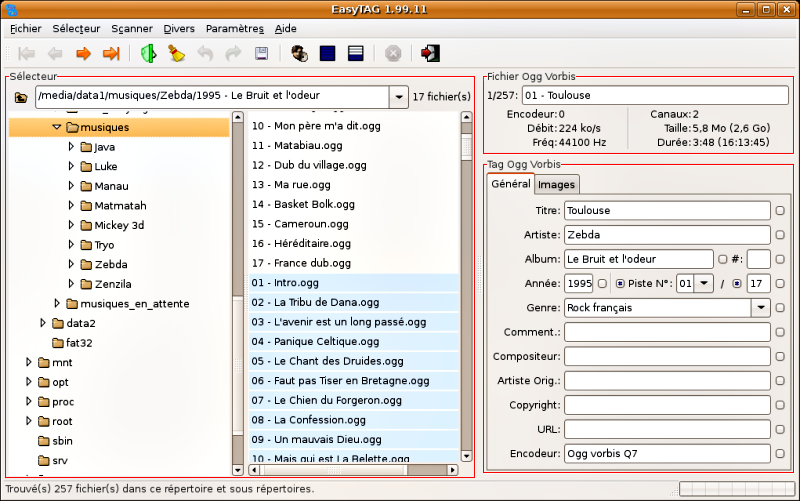
Dans la suite de ce chapitre, nous allons détailler ces différents menus et fenêtres.
La barre de menus est formée de six menus : menu «Fichier», «Sélecteur», «Scanner», «Divers», «Paramètres» et menu «Aide».
Ce menu (voir figure ci-contre) regroupe de nombreuses fonctions de manipulation des fichiers. Discutons plus particulièrement les fonctions suivantes :
-
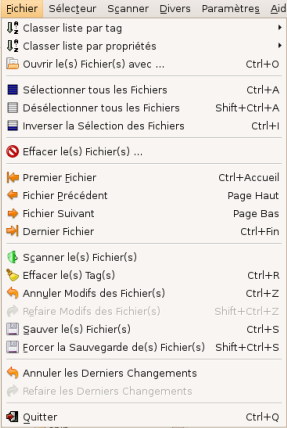
Classer liste par tag : Ce sous-menu déroulant (présenté, en partie, sur la figure ci-après) permet d'effectuer un classement de la liste des fichiers présents dans un répertoire sur la base des champs d'information du tag (piste, titre, artiste, …). Voir le paragraphe 3.1 pour plus de détails.
- Classer liste par propriétés : Ce sous-menu déroulant (présenté, en partie, sur la figure ci-après) permet d'effectuer un classement de la liste des fichiers présents dans un répertoire sur la base de caractéristiques du fichier (nom de fichier, date de création, type de fichier, …). Voir le paragraphe 3.1 pour plus de détails.
- Ouvrir le(s) Fichier(s) avec … : Cette entrée permet la mise en oeuvre d'une application externe (par exemple, lecteur de fichiers audio Xmms) sur une sélection de fichiers. Voir le paragraphe 6.2 pour plus de détails.
- Premier Fichier : Déplacement au premier fichier de la liste de la fenêtre «Sélecteur».
- Fichier Précédent : Déplacement au fichier précédent de la liste de la fenêtre «Sélecteur»
- Fichier Suivant : Déplacement au fichier suivant de la liste de la fenêtre «Sélecteur»
- Dernier Fichier : Déplacement au dernier fichier de la liste de la fenêtre «Sélecteur»
- Scanner le(s) Fichier(s) : Lance la fenêtre «Scanner». Voir le paragraphe 2.1.3 pour plus de détails.
- Annuler Modifs des Fichiers : Annule les modifications effectuées sur l'ensemble des fichiers sélectionnés.
- Refaire Modifs des Fichiers : Effectue, sur l'ensemble des fichiers sélectionnés, l'opération inverse de l'entrée précédente.
- Sauver le(s) Fichier(s) : Sauvegarde des fichiers sélectionnés ayant subi des modifications (fichiers indiqués en rouge dans la fenêtre «Sélecteur»).
- Forcer la Sauvegarde de(s) Fichier(s) : Force la sauvegarde de tous les fichiers sélectionnés, y compris ceux n'ayant pas subi de modifications (fonction utile lors de l'utilisation de certaines options avancées du logiciel).
- Annuler les Derniers Changements : Annule les modifications du dernier fichier modifié même si ce fichier n'est pas sélectionné.
- Refaire les Derniers Changements : Effectue, sur le dernier fichier modifié, l'opération inverse de l'entrée précédente.
Ce menu (voir figure ci-contre) regroupe de nombreuses fonctions de manipulation des répertoires. Discutons plus particulièrement les fonctions suivantes :
-
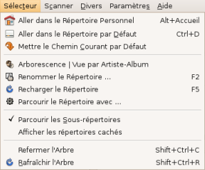
Arborescence/Vue par Artiste-Album : Cette entrée permet de basculer entre le mode arborescence répertoires et le mode arborescence artistes/albums. Voir le paragraphe 2.3 pour plus de détails.
- Parcourir le Répertoire avec … : Cette entrée permet la mise en oeuvre d'une application externe (par exemple, lecteur de fichiers audio Xmms) sur un répertoire particulier. Voir le paragraphe 6.2 pour plus de détails.
- Refermer l'Arbre : Ferme l'arborescence des répertoires et retourne à l'affichage des répertoires racines.
- Rafraîchir l'Arbre : Dans le cas de changement dans l'arborescence des fichiers (création de répertoires, déplacements/suppression de fichiers, …), lance l'acquisition de la nouvelle arborescence.
Ce menu (voir figure ci-contre) permet d'ouvrir l'un des trois scanners disponibles :
-
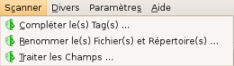
Compléter le(s) Tag(s) … : Lancement du scanner qui permet la modification automatique des champs d'information des tags des fichiers présents dans un répertoire particulier. Voir le paragraphe 4.2 pour plus de détails.
- Renommer le(s) Fichier(s) et Répertoire(s) … : Lancement du scanner qui permet de renommer automatiquement les fichiers et les répertoires. Voir le paragraphe 5.2 pour plus de détails.
- Traiter le(s) Champs … : Lancement du scanner qui permet d'effectuer un traitement automatique d'uniformisation (traitement de la casse …) des noms et des tags des fichiers présents dans un répertoire particulier. Voir le paragraphe 4.4 pour plus de détails.
Ce menu (voir figure ci-contre) regroupe, comme son nom l'indique, des fonctions très diverses :
-
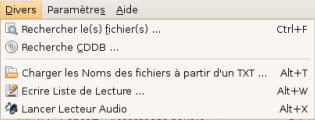
Rechercher le(s) Fichier(s) … : Lance une recherche manuelle par mot clé sur l'ensemble des fichiers présents dans un répertoire particulier. Voir le paragraphe 3.2 pour plus de détails.
- Recherche CDDB … : Lance la modification automatique des tags des fichiers d'un album via la base de données cddb. Voir le paragraphe 4.3 pour plus de détails.
- Charger les Noms des fichiers à partir d'un TXT … : Modification des noms d'un ensemble de fichiers à partir d'un fichier texte. Voir le paragraphe 5.1.4 pour plus de détails.
- Ecrire Liste de Lecture … : Création d'une liste de lecture de fichiers audio pour les logiciels Winamp ou XMMS. Voir le paragraphe 6.1 pour plus de détails.
- Lancer Lecteur Audio : Lancement du lecteur audio spécifié par défaut. Voir le paragraphe 6.2 pour plus de détails.
Ce menu contient le sous-menu «Préférences …» qui permet d'effectuer un certain nombre de réglages par défaut du logiciel EasyTAG. Cette fenêtre dispose de huit onglets de réglages différents (Sélecteur, Divers, Paramètres du nom des fichiers, Paramètres des Tags, Paramètres des Tags ID3, Scanner, Base de données CD, Confirmation). Il n'est pas possible de décrire dans le cadre de ce guide l'ensemble des différentes options de réglage du logiciel (se référer alors à chaque bulle d'aide associée à chaque option). La figure suivante présente, par exemple, les possibilités de réglages disponibles dans l'onglet «Divers». En particulier, vous pouvez voir, en bas de cette fenêtre, la zone dans laquelle vous pouvez définir le logiciel de lecture de fichiers audio par défaut (Xmms ou autre).
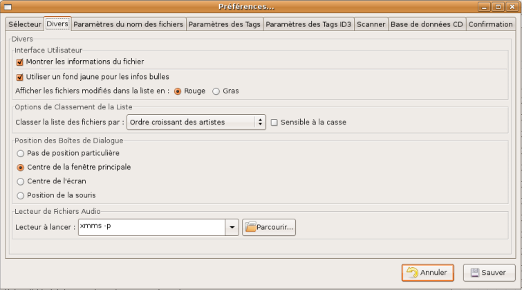
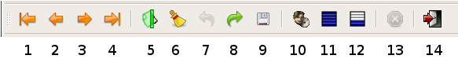
La barre de boutons, présentée ci-dessus, incorpore 14 boutons de fonctions :
- bouton 1 : déplacement au premier fichier de la liste de la fenêtre «Sélecteur»,
- bouton 2 : déplacement au fichier précédent de la liste de la fenêtre «Sélecteur»,
- bouton 3 : déplacement au fichier suivant de la liste de la fenêtre «Sélecteur»,
- bouton 4 : déplacement au dernier fichier de la liste de la fenêtre «Sélecteur»,
- bouton 5 : lancement de la fenêtre «Scanner» (voir le paragraphe 2.1.3 pour plus de détails),
- bouton 6 : effacer le tag du(des) fichier(s) sélectionné(s),
- bouton 7 : annuler les modifications du(des) fichier(s) sélectionné(s),
- bouton 8 : refaire les modifications du(des) fichier(s) sélectionné(s),
- bouton 9 : lancer la sauvegarde du(des) fichier(s) sélectionné(s),
- bouton 10 : bascule entre le mode arborescence répertoires et le mode arborescence artistes/albums (voir le paragraphe 2.3 pour plus de détails),
- bouton 11 : sélectionner tous les fichiers de la liste,
- bouton 12 : inverser la sélection des fichiers de la liste,
- bouton 13 : arrêt de l'action en cours,
- bouton 14 : quitter EasyTAG.
La fenêtre «Sélecteur» permet de choisir rapidement le répertoire de travail et les fichiers audio dont vous souhaitez éditer/modifier les tags. EasyTAG dispose, pour cela, de deux modes de visualisation du contenu d'un répertoire : mode arborescence des répertoires ou mode arborescence artistes/albums. Le basculement entre ces deux modes peut se faire en cliquant sur le bouton de la barre de boutons (voir le paragraphe 2.2).
Cette fenêtre est divisée en trois zones (zones 1, 2, 3 : voir les figures suivantes). Nous allons maintenant discuter les deux formes que peut prendre cette fenêtre suivant le mode de visualisation choisi.
-
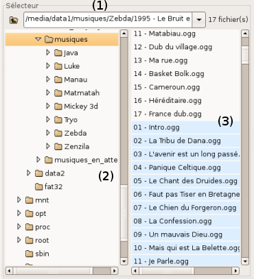
zone 1 : Cette zone permet d'afficher initialement le répertoire de travail par défaut puis, tout au long de l'édition des fichiers, le répertoire de travail courant. Elle permet aussi de spécifier directement un certain répertoire de travail, soit en :
- entrant manuellement le chemin de ce répertoire,
- choisissant un répertoire dans la liste déroulante des anciens répertoires déjà consultés.
- zone 2 : La zone 2 présente l'arborescence des différents répertoires du support de stockage. Il est alors possible de naviguer dans cette arborescence pour sélectionner très rapidement un répertoire particulier.
- zone 3 : La zone 3 affiche alors la liste de l'ensemble des fichiers audio contenus dans ce répertoire et ses sous répertoires (option de l'onglet «Préférences» du menu «Divers») et dont l'extension est reconnue par le programme.
Le nombre de fichiers de cette liste peut être relativement important. De ce fait, pour s'y retrouver, une alternance de couleur (blanc/bleu) permet de distinguer les fichiers appartenant à des répertoires différents.
Ce mode de visualisation est totalement complémentaire du précédent.
- zone 1 : Cette zone, identique à celle du mode précédent, permet d'afficher/spécifier le répertoire de travail.
- zone 2 : La zone 2 présente le contenu du répertoire sélectionné sous la forme d'une arborescence de type artistes/albums.
Les artistes correspondant aux fichiers du répertoire courant sont listés dans la partie haute de cette zone.
Pour l'artiste sélectionné, les différents albums correspondant aux fichiers présents dans le répertoire courant sont listés dans la partie basse de cette zone.
- zone 3 : La zone 3 affiche les différents fichiers audio de l'artiste et de l'album sélectionné.
Nous voyons que ce nombre de fichiers est, par nature, limité.
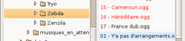
Dans la zone 3 de chacun de ces deux modes, les fichiers ayant subi des modifications soit de nom de fichier soit de tag et qui, par conséquent, doivent être sauvegardés sont clairement identifiables car ils apparaissent en rouge dans la liste des fichiers affichés (voir figure ci-contre pour le mode arborescence de répertoires).
Astuce : double-cliquez sur un fichier pour sélectionner tous les fichiers d'un même dossier. Triple-cliquez pour sélectionner tous les fichiers de la liste.
La fenêtre «Fichier» est présentée, ci-contre, pour deux types de fichiers audio (Ogg et mp3).
En plus, d'une zone de saisie/affichage du nom de fichier, cette fenêtre montre certaines caractéristiques du fichier et certaines informations de base contenues dans l'en-tête du fichier audio comme :
- le type d'encodage (par exemple MPEG1, layer III),
- le débit,
- la fréquence d'échantillonnage du fichier audio,
- la taille en Mo du fichier audio,
- la durée du morceau correspondant exprimée en (heure:minutes:secondes).
De plus, dans cette fenêtre, sont indiquées entre parenthèses :
- la taille totale en Mo/Go de l'ensemble des fichiers du répertoire sélectionné,
- la durée totale des morceaux présents dans le répertoire, exprimée en (heure:minutes:secondes).
La fenêtre Tag sert à afficher l'ensemble des différents champs d'information du tag du fichier sélectionné. Elle se caractérise par la présence de deux onglets, onglet «Général» et onglet «Images» :
 Onglet «Général» : Cet onglet est présenté ci-contre pour un fichier audio de type mp3 (tag ID3) mais sa structure est la même quelque soit le type de fichier (tag ID3, tag Ogg Vorbis, tag Flac Vorbis …).
Onglet «Général» : Cet onglet est présenté ci-contre pour un fichier audio de type mp3 (tag ID3) mais sa structure est la même quelque soit le type de fichier (tag ID3, tag Ogg Vorbis, tag Flac Vorbis …).
Les différents champs d'information du tag sont presque tous clairement identifiables.
- La zone de saisie (#) située à droite de la zone "Album" correspond au champ "numéro de disque".
- La zone de saisie située à droite du / correspond au champ "nombre total de pistes".
Dans cette fenêtre, on remarque la présence de deux types de boutons :
- Le bouton
 situé à droite de tous les champs d'information sert à généraliser la modification du champ à tous les fichiers sélectionnés dans la fenêtre "Sélecteur" (voir le paragraphe 4.1 pour plus de détails).
situé à droite de tous les champs d'information sert à généraliser la modification du champ à tous les fichiers sélectionnés dans la fenêtre "Sélecteur" (voir le paragraphe 4.1 pour plus de détails).
- Les boutons
 servent à modifier manuellement les champs "numéro de piste" et "nombre total de pistes". Leur utilisation est décrite au paragraphe 4.1.
servent à modifier manuellement les champs "numéro de piste" et "nombre total de pistes". Leur utilisation est décrite au paragraphe 4.1.
 Onglet «Images» : L'utilisation de cet onglet est spécifique au fichier Mp3 et au fichier Flac (option à activer dans l'onglet «Paramètres des tags ID3» du menu «Préférences»). En effet, dans le tag ID3, il est possible d'incorporer des images. Pour d'autres tags (Ogg Vorbis par exemple), cet onglet est présent mais n'est pas fonctionnel.
Onglet «Images» : L'utilisation de cet onglet est spécifique au fichier Mp3 et au fichier Flac (option à activer dans l'onglet «Paramètres des tags ID3» du menu «Préférences»). En effet, dans le tag ID3, il est possible d'incorporer des images. Pour d'autres tags (Ogg Vorbis par exemple), cet onglet est présent mais n'est pas fonctionnel.
La manière de procéder pour incorporer des images au tag est décrite au paragraphe 4.1.
Dans EasyTAG, on dispose de trois menus contextuels : menus accessibles en cliquant sur le bouton droit de la souris.
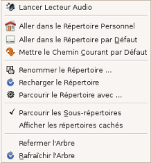
Le premier menu, présenté ci-contre, est accessible lorsque le pointeur de souris est situé dans la zone 2 de la fenêtre «Sélecteur» (voir le paragraphe 2.3). Ce menu regroupe les différentes fonctions de manipulation des répertoires et est quasiment identique au menu «Sélecteur» (voir le paragraphe 2.1.2). Dans cette liste, deux entrées doivent être commentées :
- Lancer Lecteur Audio : Lancement du lecteur audio spécifié par défaut. Voir le paragraphe 6.2 pour plus de détails.
- Parcourir le Répertoire avec … : Cette entrée permet la mise en oeuvre d'une application externe (par exemple, lecteur de fichiers audio Xmms) sur un répertoire particulier. Voir le paragraphe 6.2 pour plus de détails.
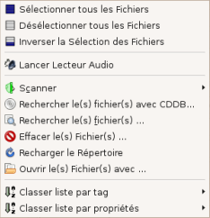
Le deuxième menu, présenté ci-contre, est accessible lorsque le pointeur de souris est situé dans la zone 3 de la fenêtre «Sélecteur» (voir le paragraphe 2.3). Ce menu regroupe les différentes fonctions de traitement des fichiers et reprend un certain nombre d'entrées du menu «Fichier» (voir le paragraphe 2.1.1) et certaines entrées du menu «Divers» (voir le paragraphe 2.1.4). Dans cette liste, deux entrées doivent être commentées :
- Lancer Lecteur Audio : Lancement du lecteur audio spécifié par défaut. Voir le paragraphe 6.2 pour plus de détails.
- Ouvrir le(s) Fichier(s) avec … : Cette entrée permet la mise en oeuvre d'une application externe (par exemple, lecteur de fichiers audio Xmms) sur une sélection de fichiers. Voir le paragraphe 6.2 pour plus de détails.
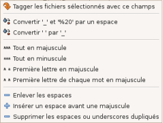
Le troisième menu, présenté ci-contre, est accessible lorsque le pointeur de souris est situé dans la zone de saisie de la fenêtre «Fichier» ou dans les zones de saisie de la fenêtre «Tag». Les différentes entrées sont identiques à celles du sous-menu «Traiter les champs» du menu «Scanner» (voir paragraphe 3.4). Les différentes entrées permettent de réaliser des modifications sur le nom et sur les champs d'information des fichiers telles que :
- conversion minuscules/majuscules.
- remplacement d'un caractère par un autre …
- RETOUR A LA TABLE DES MATIERES -